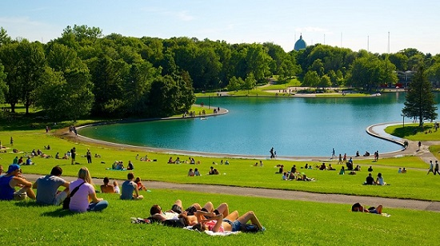

Must See Sites in Montréal
Aside from architectures, art, museums, and other activities. Here are must see sites in Montréal
The Montréal Tower

This 165 metres, which is standing at a 45 degree angle, is the allest inclined tower in the world certified by the Guinness World Records in 2010. Visitors can ride a funicular to reach the top of this structure. This is just one of many must see sites in Parc Olympique in Montréal.
Notre-Dame Basilica of Montréal
Notre-Dame Basilica is an important part of the Catholic religious heritage in Montréal. The church was first established in 1642 as a small chapel; it was in 1657 where the construction for a larger church was started and finished between 1672 and 1683. Though it is hard to ignore the impressive features and design of the Basilica, it is primary mission is to provide a place for worship.
Montréal Botanical Garden
Recognized as one of the greatest botanical gardens in the world, the Botanical Garden is one of Montréal's crown jewels. Come and see the collections of 22,000 plant species, 10 greenhouses, and many beautiful gardens spread out around the area and admire its natural beauty.
Mount Royal Park
Designed by Frederick Law Olmsted, this park was inaugurated in 1876. Enjoy various type of plants and birds that inhabited the park. From relaxing to doing activities, Mount Royal is for everyone to enjoy.